曆志三
授時曆經上
步氣朔第一
至元十八年歲次辛巳爲元。上考往古，下驗將來，皆距立元爲算。周歲消長，百年各一。其諸應等數，隨時推測，不用爲元。
日周，一萬。
歲實，三百六十五萬二千四百二十五分。
通餘，五萬二千四百二十五分。
朔實，二十九萬五千三百五分九十三秒。
通閏，十萬八千七百五十三分八十四秒。
歲周，三百六十五日二千四百二十五分。
朔策，二十九日五千三百五分九十三秒。
氣策，十五日二千一百八十四分三十七秒半。
望策，十四日七千六百五十二分九十六秒半。
弦策，七日三千八百二十六分四十八秒少。
氣應，五十五萬〇六百分。
閏應，二十萬一千八百五十分。
按《授時曆》閏轉交三應，後有改定之數。閏應，二十萬一千八百五十分，明《大統曆法通軌》作二十萬二千五十分，實加二百分，是當時經朔改早二刻也。轉應，一十三萬一千九百四分，《通軌》作一十三萬二百五分，實減一千六百九十九分，是入轉改遲一十七刻弱也。交應，二十六萬一百八十七分八十六秒，《通軌》作二十六萬三百八十八分，實加二百分一十四秒，是正交改早二刻强也。梅文鼎謂《通軌》所述者乃《授時》續定之數，而《曆經》所存則其未定之初稿是也。
没限，七千八百一十五分六十二秒半。
氣盈，二千一百八十四分三十七秒半。
朔虚，四千六百九十四分七秒。
旬周，六十萬。
紀法，六十。
推天正冬至
置所求距，算以歲實。上推往古，每百年長一。下算將求，每百年消一。乘之，爲中積。加氣應，爲通積。滿旬周，去之；不盡，以日周約之爲日，不滿爲分。其日命甲子算外，即所求天正冬至日辰及分。如上考者，以氣應減中積，滿旬周，去之；不盡，以減旬周。餘同上。
求次氣
置天正冬至日分，以氣策累加之，其日滿紀法，去之，外命如前，各得次氣日辰及分秒。
推天正經朔
置中積，加閏應，爲閏積。滿朔實，去之，不盡爲閏餘，以減通積，爲朔積。滿旬周，去之，不盡，以日周約之爲日，不滿爲分，即所求天正經朔日及分秒。上考者，以閏應減中積，滿朔實，去之不盡，以減朔實，爲閏餘。以日周約之爲日，不滿爲分，以減冬至日及分，不及減者，加紀法減之，命如上。
求弦望及次朔
置天正經朔日及分秒，以弦策累加之，其日滿紀法，去之，各得弦望及次朔日及分秒。
推没日
置有没之氣分秒，如没限已上爲有没之氣。以十五乘之，用減氣策，餘滿氣盈而一爲日，併恒氣日，命爲没日。
推滅日
置有滅之朔分秒，在朔虚分已下爲有滅之朔。以三十乘之，滿朔虚而一爲日，併經朔日，命爲滅日。
步發斂第二
土王策，三日四百三十六分八十七秒半。
月閏，九千六十二分八十二秒。
辰法，一萬。
半辰法，五千。
刻法，一千二百。
推五行用事
各以四立之節，爲春木、夏火、秋金、冬水首用事日。以土王策減四季中氣，各得其季土始用事日。
氣候
正月
立春，正月節。 雨水，正月中。
東風解凍，蟄蟲始振，魚陟負冰。
獺祭魚，候雁北，草木萌動。
二月
驚蟄，二月節。 春分，二月中。
桃始華，倉庚鳴，鷹化爲鳩。
玄鳥至，雷乃發聲，始電。
三月
清明，三月節。 穀雨，三月中。
桐始華，田鼠化爲鴽，虹始見。
萍始生，鳴鳩拂其羽，戴勝降于桑。
四月
立夏，四月節。 小滿，四月中。
螻蟈嗚，蚯蚓出，王瓜生。
苦菜秀，靡草死，麥秋至。
五月
芒種，五月節。 夏至，五月中。
螳螂生，鵙始鳴，反舌無聲。
鹿角解，蜩始鳴，半夏生。
六月
小暑，六月節。 大暑，六月中。
温風至，蟋蟀居壁，鷹始摯。
腐草爲螢，土潤溽暑，大雨時行。
七月
立秋，七月節。 處暑，七月中。
涼風至，白露降，寒蟬鳴。
鷹乃祭鳥，天地始肅，禾乃登。
八月
白露，八月節。 秋分，八月中。
鴻雁來，玄鳥歸，羣鳥養羞。
雷始收聲，蟄蟲坏户，水始涸。
九月
寒露，九月節。 霜降，九月中。
鴻雁來賓，雀入大水爲蛤，菊有黄華。
豺乃祭獸，草木黄落，蟄蟲咸俯。
十月
立冬，十月節。 小雪，十月中。
水始冰，地始凍，雉入大水爲蜃。
虹藏不見，天氣上升，地氣下降。閉塞而成冬。
十一月
大雪，十一月節。 冬至，十一月中。
鶡鴠不鳴，虎始交，荔挺出。
蚯蚓結，麋角解，水泉動。
十二月
小寒，十二月節。 大寒，十二月中。
雁北鄉，鵲始巢，雉雊。
雞乳，征鳥厲疾，水澤腹堅。
推中氣去經朔
置天正閏餘，以日周約之，爲日命之，得冬至去經朔。以月閏累加之，各得中氣去經朔日算。滿朔策，去之，乃全置閏，然俟定朔無中氣者裁之。
推發斂加時
置所求分秒，以十二乘之，滿辰法而一，爲辰數。餘以刻法收之，爲刻。命子正算外，即所在辰刻。如滿半辰法，通作一作辰，命起子初。
步日躔第三
周天分，三百六十五萬二千五百七十五分。
周天，三百六十五度二十五分七十五秒。
半周天，一百八十二度六十二分八十七秒半。
象限，九十一度三十一分四十三秒太。
歲差，一分五十秒。
周應，三百一十五萬一千七十五分。
半歲周，一百八十二日六千二百一十二分半。
盈初縮末限，八十八日九千九十二分少。
縮初盈末限，九十三日七千一百二十分少。
推天正經朔弦望入盈縮曆
置半歲周，以閏餘日及分減之，即得天正經朔入盈縮曆。冬至後盈，夏至後縮。以弦策累加之，各得弦望及次朔入盈縮曆日及分秒。滿半歲周去之，即交盈縮。
求盈縮差
視入限盈者，在盈初縮末限已下，爲初限，已上，反減半歲周，餘爲末限；縮者，在縮初盈末限已下，爲初限，已上，反減半歲周，餘爲末限。其盈初縮末者，置立差三十一，以初末限乘之，加平差二萬四千六百，又以初末限乘之，用減定差五百一十三萬三千二百，餘再以初末限乘之，滿億爲度，不滿退除爲分秒。縮初盈末者，置立差二十七，以初末限乘之，加平差二萬二千一百，又以初末限乘之，用減定差四百八十七萬六百，餘再以初末限乘之，滿億爲度，不滿退限爲分秒，即所求盈縮差。
又術：置入限分，以其日盈縮分乘之，萬約爲分，加其下盈縮積，萬約爲度，不滿爲分秒，亦得所求盈縮差。
赤道宿度
角十二一十 亢九二十 氐十六三十 房五六十 心六五十 尾十九一十 箕十四十
右東方七宿，七十九度二十分。
斗二十五二十 牛七二十 女十一三十五 虚八九十五太 危十五四十 室十七一十 壁八六十
右北方七宿，九十三度八十分太。
奎十六六十 婁十一八十 胃十五六 昴十一三十 畢十七四十 觜初五 參十一一十
右西方七宿，八十三度八十五分。
井三十三三十 鬼二二十 柳十三三十 星六三十 張十七二十五 翼十八七十五 軫十七三十
右南方七宿，一百八度四十分。
右赤道宿次，並依新製渾儀測定，用爲常數，校天爲密。若考往古，即用當時宿度爲準。
推冬至赤道日度
置中積，以加周應爲通積，滿周天分，上推往古，每百年消一。下算將來，每百年長一。去之，不盡，以日周約之爲度；不滿，退約爲分秒。命起赤道虚宿六度外，去之，至不滿宿，即所求天正冬至加時日躔赤道宿度及分秒。上考者，以周應減中積，滿周天，去之，不盡，以減周天，餘以日周之爲度；餘同上。如當時有宿度，止依當時宿度命之。
求四正赤道日度
置天正冬至加時赤道日度，累加象限，滿赤道宿次，去之，各得春夏秋正日所在宿度及分秒。
求四正赤道宿積度
置四正赤道宿全度，以四正赤道日度及分減之，餘爲距後度。以赤道宿度累加之，各得四正後赤道宿積度及分。
黄赤道率
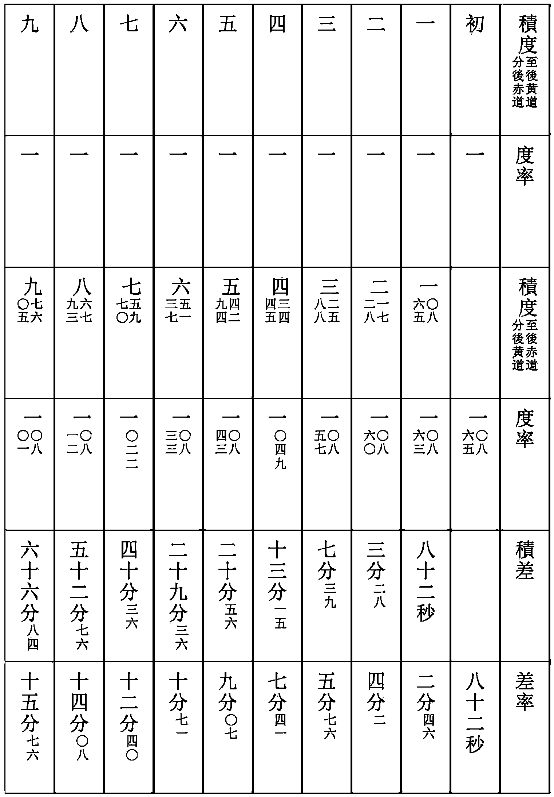
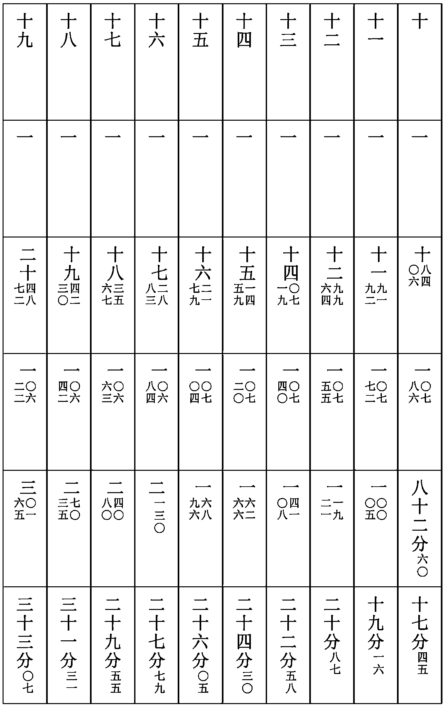
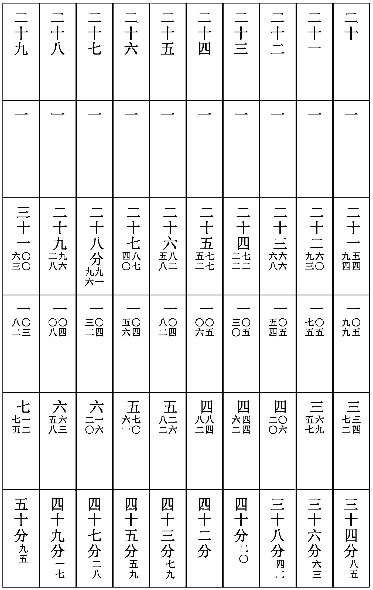
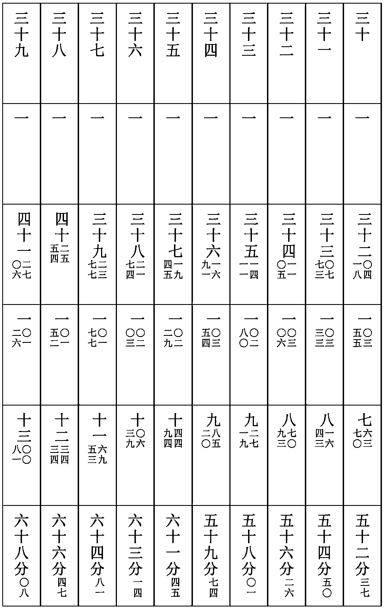
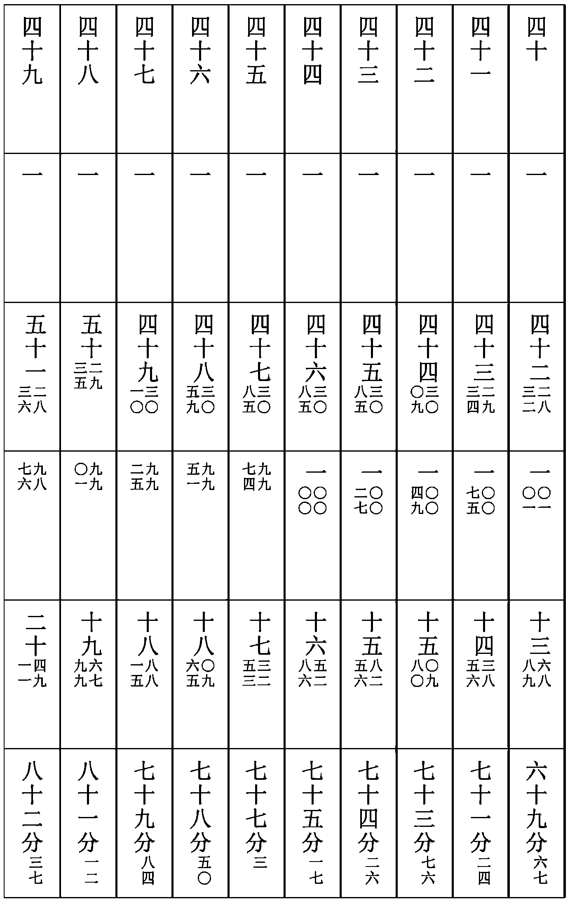
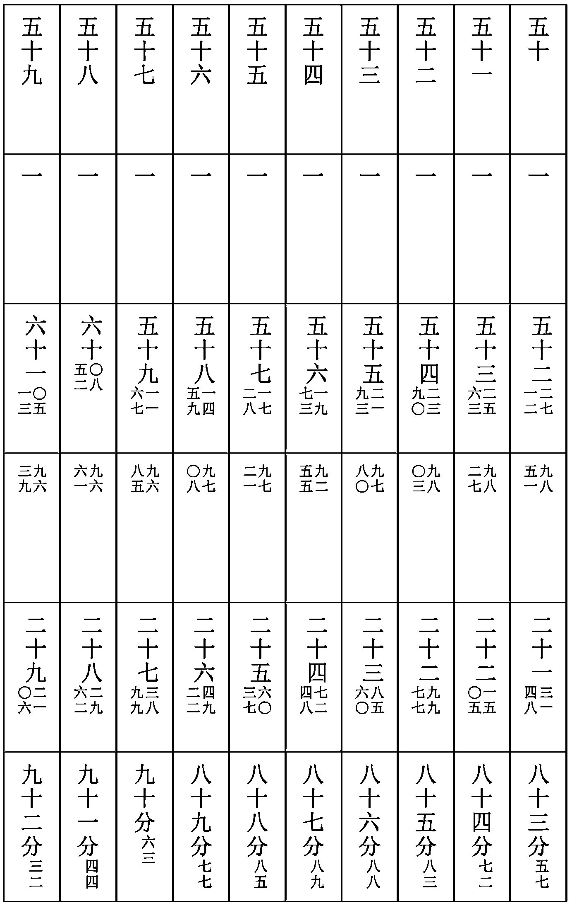
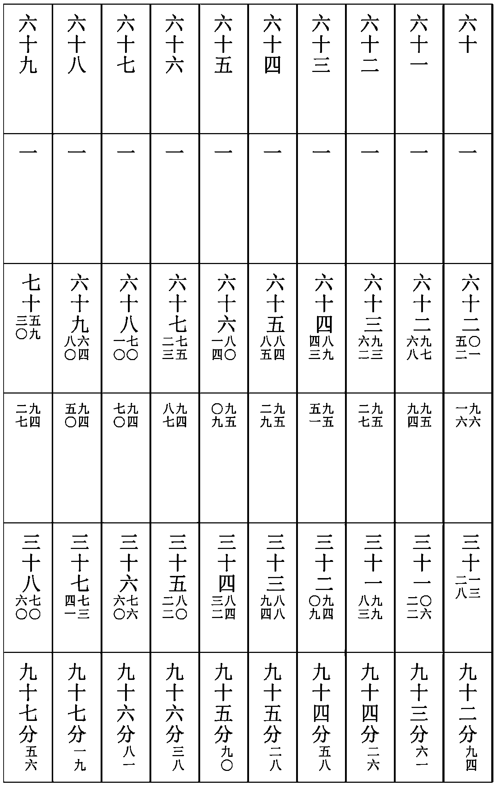
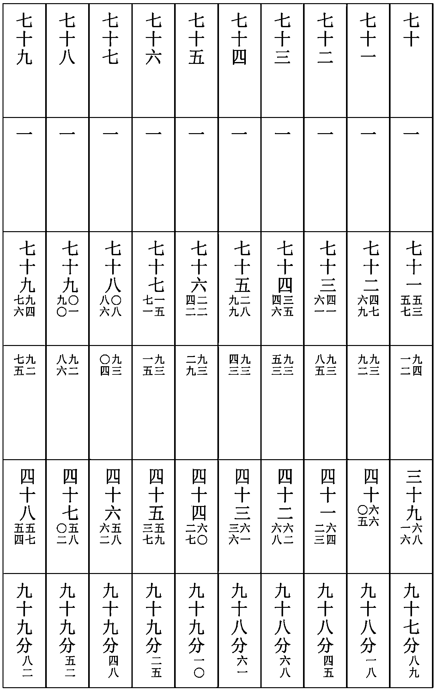
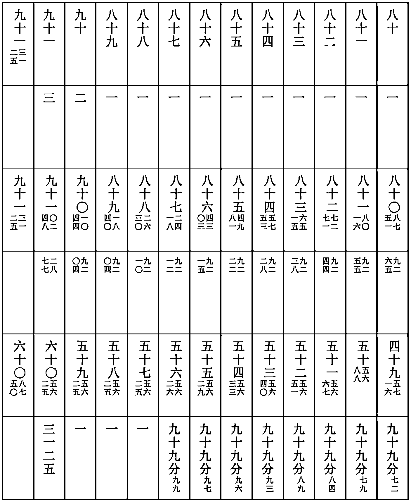
推黄道宿度
置四正後赤道宿積度，以其赤道積度減之，餘以黄道率乘之，如赤道率而一。所得以加黄道積度，爲二十八宿黄道積度。以前宿黄道積度減之，爲其宿黄道度及分。其秒就近爲分。
黄道宿度
角十二八十七 亢九五十九 氐十六四十 房五四十八 心六二十七 尾十七九十五 箕九五十九
右東方七宿，七十八度一十二分。
斗二十三四十七 牛六九十 女十一一十二 虚九分空太 危十五九十五 室十八三十二 壁九三十四
右北方七宿，七十四度一十分太。
奎十七八十七 婁十二三十六 胃十五八十一 昴十一〇八 畢十六六十 觜初〇五 參十二十八
右西方七宿，八十三度九十五分。
井三十一〇三 鬼二一十一 柳十三 星六三十一 張十七七十九 翼二十〇九 軫十八七十五
右南方七宿，一百九度八分
右黄道宿度，依今曆所測赤道准冬至歲差所在算定，以憑推步。若上下考驗，據歲差每移一度，依術推變，各得當時宿度。
推冬至加時黄道日度
置天正冬至加時赤道日度，以其赤道積度減之，餘以黄道率乘之，如赤道率而一。所得以加黄道積度，即所求年天正冬至加時黄道日度及分秒。
求四正加時黄道日度
置所求年冬至日躔黄赤道差，與次年黄赤道差相減，餘四而一，所得加象限，爲四正定象度。置冬至加時黄道日度，以四正定象度累加之，滿黄道宿次，去之，各得四正定氣加時黄道宿度及分。
求四正晨前夜半日度
置四正恒氣日及分秒，冬夏二至，盈縮之端，以恒爲宿。以盈縮差命爲日分，盈減朔加之，即爲四正定氣日及分。置日下分，以其日行度乘之，如日周而一。所得以減四正加時黄道日度，各得四正定晨前夜半日度及分秒。
求四正後每日晨前夜半黄道日度
以四正定氣日距後正定氣日爲相距日，以四正定氣晨前夜半日度距後正定氣晨前夜半日度爲相距度，累計相距日之行定度。與相距度相減，餘如相距日而一，爲日差。相距度多爲加，相距度少爲減。以加減四正每日行度率，爲每日行定度。累加四正晨前夜半黄道日度，滿宿次，去之，爲每日晨前夜半黄道日度及分秒。
求每日午中黄道日度
置其日行定度，半之，以加其日晨前夜半黄道日度，得午中黄道日度及分秒。
求每日午中黄道積度
以二至加時黄道日度距所求日午中黄道日度，爲二至後黄道積度及分秒。
求每日午中赤道日度
置所求日午中黄道積度，滿象限，去之，餘爲分後。内減黄道積度，以赤道率乘之，如黄道率而一。所得以加赤道積度及所去象限，爲所求赤道積度及分秒。以二至赤道日度加而命之，即每日午中赤道日度及分秒。
黄道十二次宿度
危，十二度六十四分九十一秒。入娵訾之次，辰在亥。
奎，一度七十三分六十三秒。入降婁之次，辰在戌。
胃，三度七十四分五十六秒。入大梁之次，辰在酉。
畢，六度八十八分五秒。入實沈之次，辰在申。
井，八度三十四分九十四秒。入鶉首之次，辰在未。
柳，三度八十六分八十秒。入鶉火之次，辰在午。
張，十五度三十六分六秒。入鶉尾之次，辰在巳。
軫，十度七分九十七秒。入壽星之次，辰在辰。
氐，一度一十四分五十二秒。入大火之次，辰在卯。
尾，三度一分一十五秒。入析木之次，辰在寅。
斗，二度七十六分八十五秒。入星紀之次，辰在丑。
女，二度六分三十八秒。入玄枵之次，辰在子。
求入十二次時刻
各置入次宿度及分秒，以其日晨前夜半日度減之，餘以日周乘之，爲實。以其日行定度爲法，實如法而一，所得依發斂加時求之，即入次時刻。
步月離第四
轉終分，二十七萬五千五百四十六分。
轉終，二十七日五千五百四十六分。
轉中，十三日七千七百七十三分。
初限，八十四。
中限，一百六十八。
周限，三百三十六。
月平行，十三度三十六分八十七秒半。
轉差，一日九千七百五十九分九十三秒。
弦策，七日三千八百二十六分四十八秒少。
上弦，九十一度三十一分四十三秒太。
望，一百八十二度六十二分八十七秒半。
下弦，二百七十三度九十四分三十一秒少。
轉應，一十三萬一千九百四分。
推天正經朔入轉
置中積，加轉應，減閏餘。滿轉終分，去之，不盡，以日周約之爲日，不滿爲分，即天正經朔入轉日及分。上考者，中積内加所求閏餘，減轉應，滿轉終，去之，不盡，以減轉終，餘同上。
求弦望及次朔入轉
置天正經朔入轉日及分，以弦策累加之，滿轉終，去之，即弦望及次朔入轉日及分秒。如徑求次朔，以轉差加之。
求經朔弦望入遲疾曆
各視入轉日及分秒。在轉中已下，爲疾曆。已上，減去轉中，爲遲曆。
遲疾轉定及積度
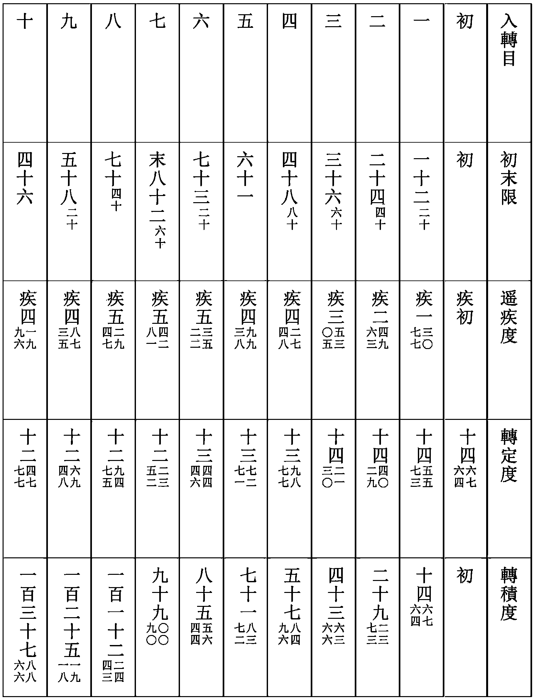
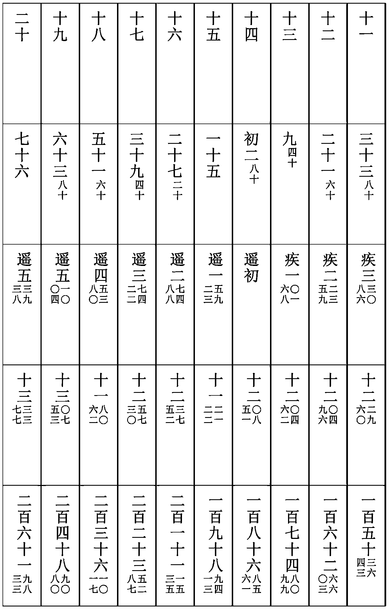
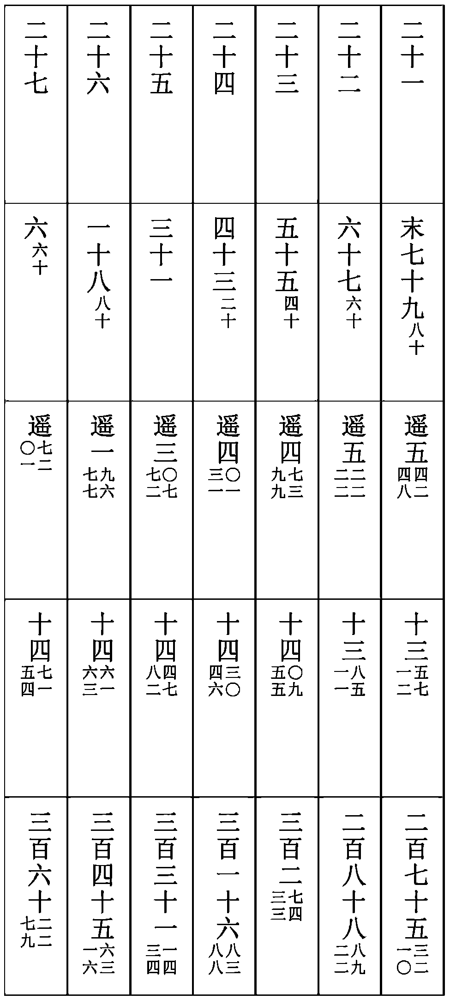
求遲疾差
置遲疾曆日及分，以十二限二十分乘之，在初限已下爲初限，已上覆減中限，餘爲末限。置立差三百二十五，以初末限乘之，加平差二萬八千一百，又以初末限乘之，用減定差一千一百一十一萬，餘再以初末限乘之，滿億爲度，不滿退除爲分秒，即遲疾差。
又術：置遲疾曆日及分，以遲疾曆日率減之，餘以其下損益分乘之。如八百二十而一，益加損減其下遲疾度，亦爲所求遲疾差。
求朔弦望定日
以經縮弦望盈縮差與遲疾差，同名相從，異名相消。盈遲縮疾爲同名，盈疾縮遲爲異名。以八百二十乘之，以所入遲疾限下行度除之，即爲加減差，盈遲爲加，縮疾爲減。以加減經朔弦望日及分，即定朔弦望日及分。若定弦望分在日出分已下者，退一日，其日命甲子算外，各得定朔弦望日辰。定朔干名與後朔干同者，其月大。不同者，其月小。内無中氣者，爲閏月。
推定朔弦望加時日月宿度
置經朔弦望入盈縮曆日及分，以加減差加減之，爲定朔弦望入曆。在盈，便爲中積，在縮，加半歲周，爲中積。命日爲度，以盈縮差盈加縮減之，爲加時定積度。以冬至加時日躔黄道縮度加而命之，各得定朔弦望加時日度。
凡合朔加時，日月同度，便爲定朔加時月度。其弦望各以弦望度加定積，爲定弦望月行定積度。依上加而命之，各得定弦望加時黄道月度。
推定朔弦望加時赤道月度
各置定朔弦望加時黄道月行定積度，滿象限，去之，以其黄道積度減之，餘以赤道率乘之，如黄道率而一，用加其下赤道積度及所去象限，各爲赤道加時定積度。以冬至加時赤道日度加而命之，各爲定朔弦望加時赤道月度及分秒。象限以下及半周，去之，爲至後。滿象限及三象，去之，爲分後。
推朔後平交入轉遲疾曆
置交終日及分，内減經朔入交日及分，爲朔後平交日。以加經朔入轉，爲朔後平交入轉。在轉中已下，爲疾曆。已上，去之，爲遲曆。
求正交日辰
置經朔，加朔後平交日，以遲疾曆依前求到遲疾差，遲加疾減之，爲正交日及分，其日命甲子算外，即正交日辰。
推正交加時黄道月度
置朔後平交日，以月平行度乘之，爲距後度。以加經朔中積，爲冬至距正交定積度。以冬至日躔黄道宿度加而命之，爲正交加時月離黄道宿度及分秒。
求正交在二至後初末限
置冬至距正交積度及分，在半歲周已下，爲冬至後。已上，去之，爲夏至後。其二至後，在象限已下，爲初限。已上，減去半歲周，爲末限。
求定差距差定限度
置初末限度，以十四度六十六分乘之，如象限而一，爲定差。反減十四度六十六分，餘爲距差。以二十四乘定差，如十四度六十六分而一。所得交在冬至後名減，夏至後名加，皆加減九十八度，爲定限度及分秒。
求四正赤道宿度
置冬至加時赤道度，命爲冬至正度。以象限累加之，各得春分、夏至、秋分正積度。各命赤道宿次去之，爲四正赤道宿度及分秒。
求月離赤道正交宿度
以距差加減春秋二正赤道宿度，爲月離赤道正交宿度及分秒。冬至後，初限加，末限減，視春正。夏至後，初限減，末限加，視秋正。
求正交後赤道宿積度入初末限
各置春秋三正赤道所當宿全度及分，以月離赤道正交宿度及分減之，餘爲正交後積度。以赤道宿次累加之，滿象限去之，爲半交後。又去之，爲中交後。再去之，爲半交後。視各交積度在半象已下，爲初限。已上，用減象限，餘爲末限。
求月離赤道正交後半交日道舊名九道。出入赤道内外度及定差
置各交定差度及分，以二十五乘之，如六十一而一。所得，視月離黃道正交在冬至後宿度爲減，夏至後宿度爲加，皆加減二十三度九十分。爲月離赤道後半交白道出入赤道内外度及分。以周天六之一，六十度八十七分六十二秒半，除之，爲定差。月離赤道正交後爲外，中交後爲内。
求月離出入赤道内外白道去極度
置每日月離赤道交後初末限，用減象限，餘爲白道積。用其積度減之，餘以其差率乘之，所得百約之，以加其下積差，爲每日積差。用減周天六之一，餘以定差乘之，爲每日月離赤道内外度。内減外加象限，爲每日月離白道去極度及分秒。
求每交月離白道積度及宿次
置定限度，與初末限相減相乘，退位爲分，爲定差。正交、中交後爲加，半交後爲減。以差加減正交後赤道積度，爲月離白道定積度。以前宿白道定積度減之，各得月離白道宿次及分。
推定朔弦望加時月離白道宿度
各以月離赤道正交宿度距所求定朔弦望加時月離赤道宿度，爲正交後積度。滿象限，去之，爲半交後。又去之，爲中交後。再去之，爲半交後。視交後積度在半象已下，爲初限。已上，用減象限，爲末限。以初、末限與定限度相減相乘，退位爲分，分滿百爲度，爲定差。正交、中交後爲加，半交後爲減。以差加減月離赤道正交後積度，爲定積度。以正交宿度加之，以其所當月離白道宿次去之，各得定朔弦望加時月離白道度及分秒。
求定朔望加時及夜半晨昏入轉
置經朔弦望入轉日及分，以定朔弦望加減差加減之，爲定朔弦望加時入轉。以定朔弦望日下分減之，爲夜半入轉。以晨分加之，爲晨轉。昏分加之，爲昏轉。
求夜半月度
置定朔弦望日下分，以其入轉日轉定度乘之，萬約爲加時轉度，以減加時定積度，餘爲夜半定積度，依前加而命之，各得夜半月離宿度及分秒。
求晨昏月度
置其日晨昏分，以夜半入轉日轉定度乘之，萬約爲晨昏轉度。各加夜半定積度，爲晨昏定積度。加命如前，各得晨昏月離宿度及分秒。
求每日晨昏月離白道宿次
累計相距日數轉定度，爲轉積度，與定朔弦望晨昏宿次前後相距度相減，餘以相減日數除之，爲日差。距度多爲加，距度少爲減。以加減每日轉定度爲行定度，以累加定朔弦望晨昏月度，加命，即每日晨昏月離白道宿次。朔後用昏，望後用晨，朔望晨昏俱用。
本章完!